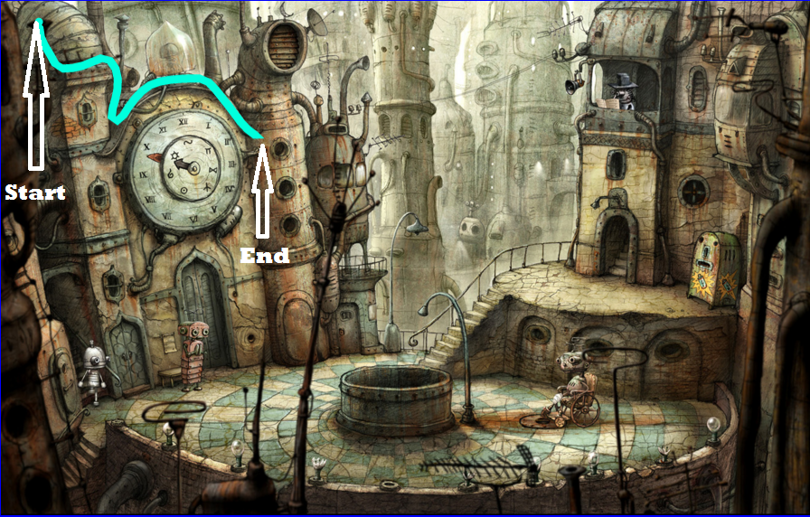
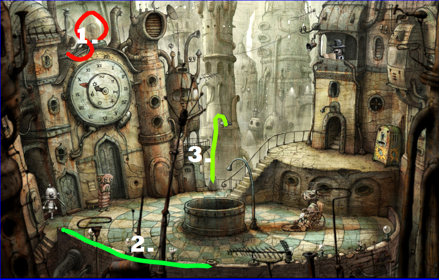

Tutorial
Use this tutorial to learn how to create a Doodle password!
- Beginning and End
- Stroke Order
- Be Creative
Every stroke has a beginning and end. When logging in, you will need to start and end in the same areas to log in.
Remember the order of your strokes! Entering your strokes in the wrong order can prevent you from logging in.
More Creativity = More Security.
For example, using more than one rotation in a circle or retracing a line back to the beginning.
Come up with your own ways to be creative!